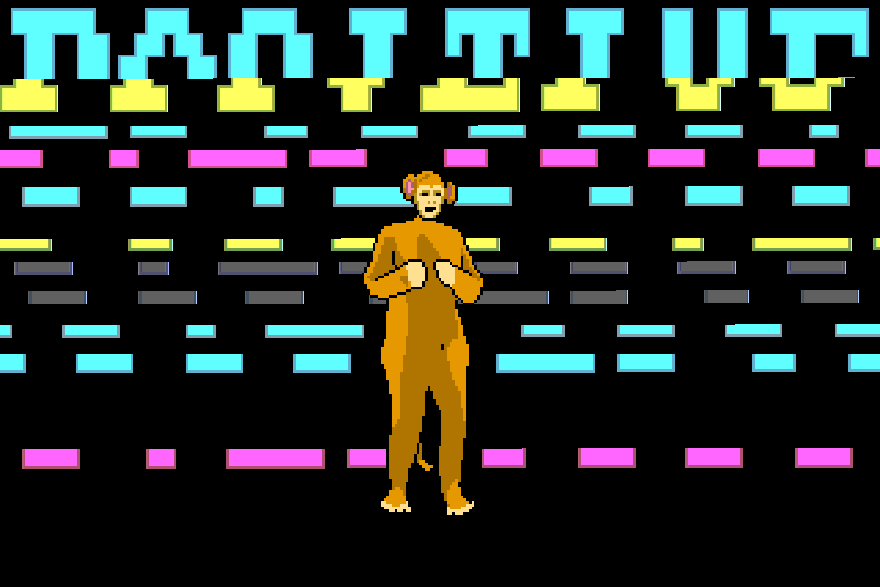

I am delighted to begin the Galvanize Web-Development program and look forward to learning all about Full-Stack development. My decision to enroll in the program was based on the fact that I needed to update my skill-set so that I could build modern SPA's able to pull live data from remote telemetry systems. And of course to open doors to a greater pool of potential employers.
How do I feel about the course?
